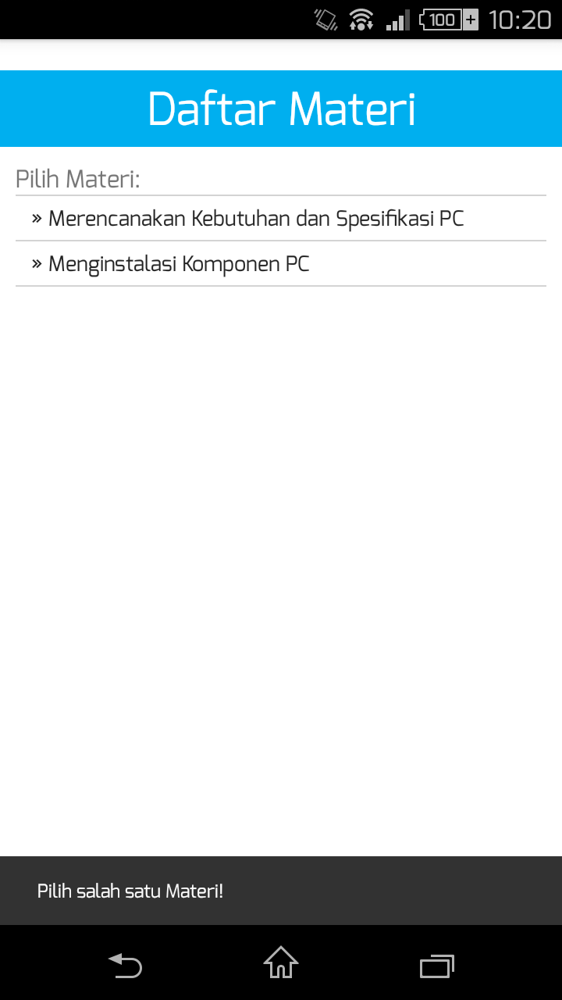
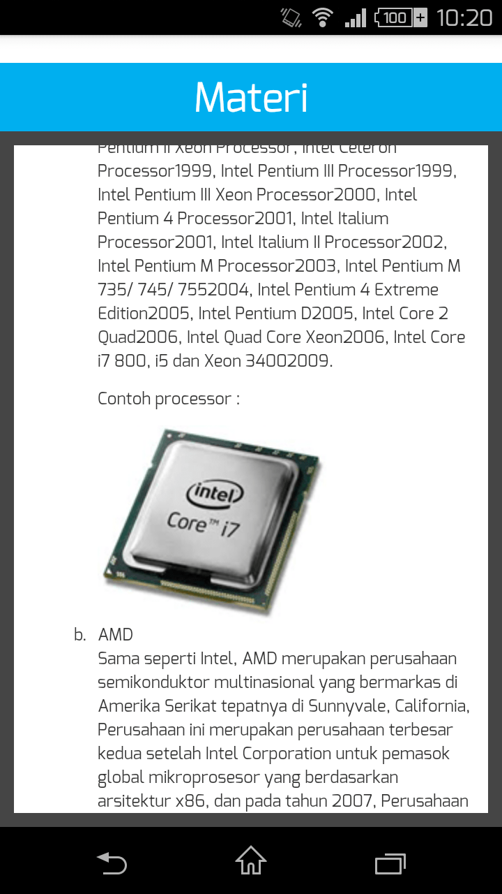

Untuk menggunakan fitur Materi, sentuh pada menu "Materi"
Aplikasi akan membawa Anda menuju daftar materi yang ada di dalam aplikasi ini.

Langkah selanjutnya adalah, Anda memilih materi mana yang akan Anda baca. Setelah memilih salah satu materi, aplikasi akan membuka materi sesuai dengan materi yang Anda pilih.

Untuk kembali, tekan tombol Back Button.